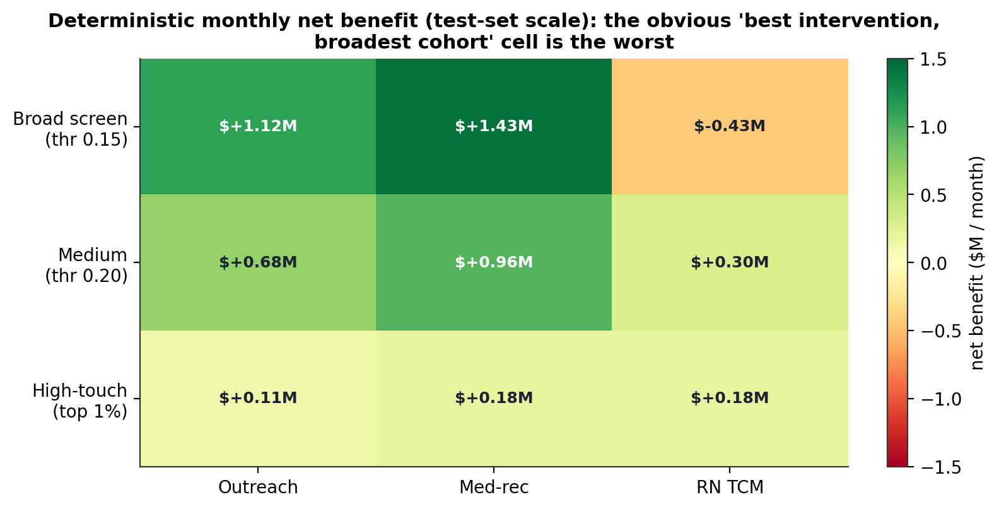
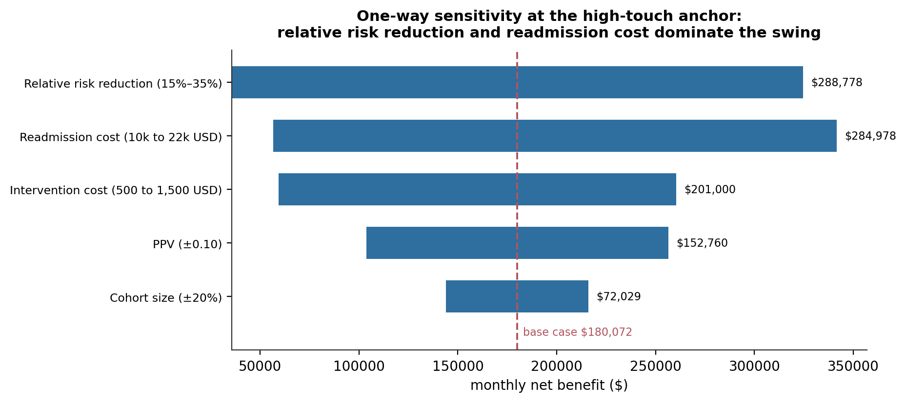
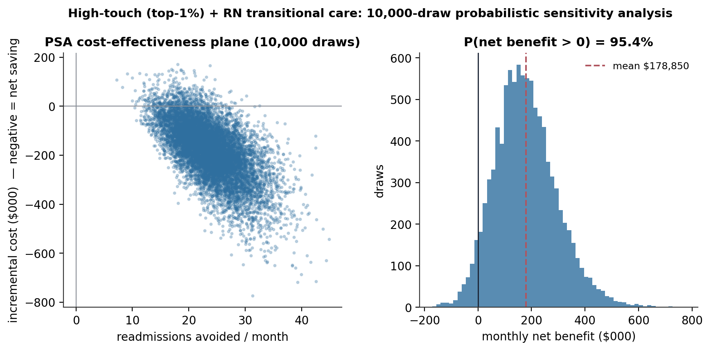
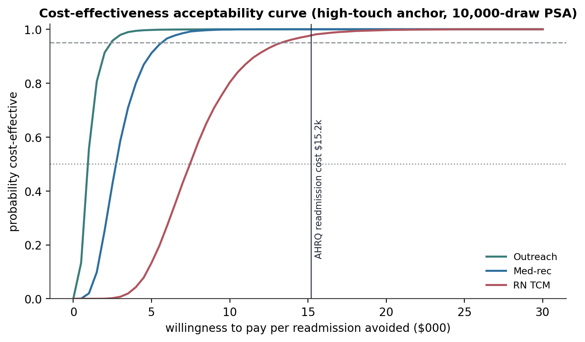
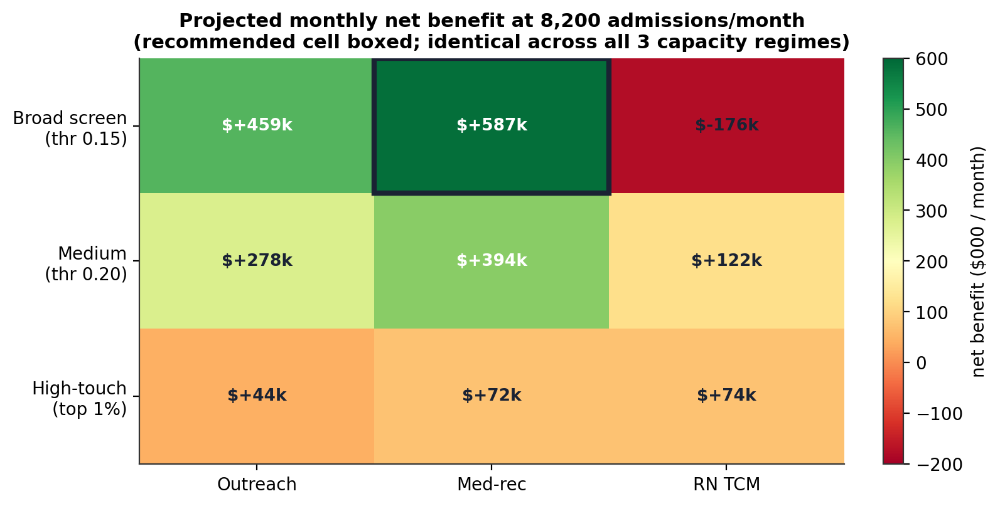
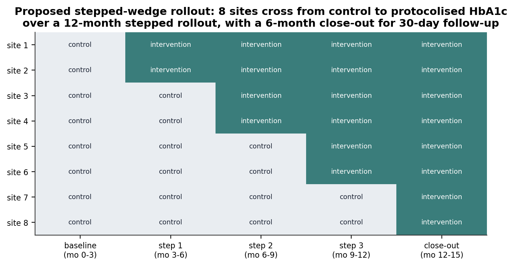
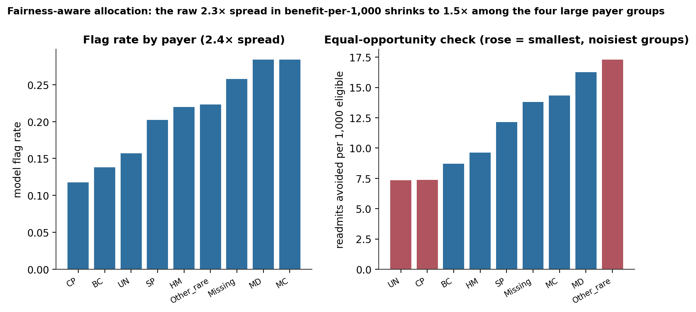

From a Calibrated Readmission Scorer to a Governed Targeting Decision: A CHEERS-Aligned PSA, a Pre-Registered Scenario Grid, and a Stepped-Wedge Trial Proposal
The most effective intervention applied to the broadest cohort is the worst cell in the grid. A 10,000-draw probabilistic sensitivity analysis, a 3×3 capacity grid with a decision rule fixed in advance, and a confirmatory trial design for the one causal signal that survived.
Converting a calibrated 30-day readmission scorer into an operational targeting decision for a hospital network’s care-coordination team, framed as a CHEERS-aligned health-economic evaluation. The counterintuitive core: applying RN transitional care (the most effective intervention) at the broad-screening threshold (the largest cohort) destroys about $430k/month of value — its 21% precision cannot justify $900/patient. The recommendation: broad screening (threshold 0.15) with pharmacist medication-reconciliation calls — $587k/month net benefit, ~65 readmissions avoided, 100% coverage — and it is the same cell in all three capacity regimes. Uncertainty: a 10,000-draw PSA puts P(net benefit > 0) at 97% for that cell; a CEAC shows all three interventions clearing 95% cost-effectiveness at a willingness-to-pay of $15k (the AHRQ readmission cost). The trial: a stepped-wedge cluster RCT for the injury/orthopedics HbA1c signal — n ≈ 483, 8 sites, 18 months, ~$1.75M. Fairness: the 2.3× spread in benefit-per-1,000 across payer groups shrinks to 1.5× among the four large groups and reflects real risk, not bias.
health economic evaluation, CHEERS, cost-benefit analysis, probabilistic sensitivity analysis, Monte Carlo, cost-effectiveness acceptability curve, tornado diagram, decision rule, pre-registration, stepped-wedge cluster randomised trial, Hussey-Hughes, transitional care, hospital readmission, fairness-aware allocation, Python
Abstract
This study converts a calibrated 30-day readmission risk scorer into an operational targeting decision for a hospital network’s care-coordination team, using a CHEERS-aligned health-economic framework. Three intervention tiers — automated outreach ($35/patient, 8% relative risk reduction), pharmacist medication reconciliation ($200, 15%), and RN transitional care ($900, 25%), each with a literature-sourced uncertainty range — are evaluated at three operating points from the model’s clinical-impact analysis and across three capacity regimes. The deterministic model surfaces a counterintuitive result: the RN-transitional-care intervention applied at the broad-screening threshold, the largest and most expensive cell, produces a monthly net benefit of about −$430,000, because a 21% positive predictive value cannot justify a $900-per-patient outlay even at a 25% relative risk reduction. A one-way tornado analysis identifies the relative risk reduction and the cost of a readmission as the two dominant swing parameters. A 10,000-draw probabilistic sensitivity analysis, and a cost-effectiveness acceptability curve over willingness-to-pay thresholds, confirm the deterministic ranking under joint parameter uncertainty. A decision rule fixed before the scenario grid was computed selects the same cell in every capacity regime: broad screening (threshold 0.15) with pharmacist medication-reconciliation calls — a projected $587,000/month net benefit, about 65 readmissions avoided, 100% coverage of the flagged cohort. Because an earlier causal analysis returned a population-level null for the originally-hypothesised HbA1c-testing lever, the intervention effect sizes are drawn from the published transitional-care RCT literature, not from the internal estimate. The one causal signal that survived — a protective effect in injury and orthopedic admissions — is scoped as a stepped-wedge cluster randomised trial (n ≈ 483, 8 sites, 18 months, ~$1.75M), not deployed. A fairness-aware allocation check finds the raw 2.3× spread in benefit-per-1,000-eligible across payer groups shrinks to 1.5× among the four large groups and reflects genuine baseline-risk variation.
Keywords: health economic evaluation, CHEERS, probabilistic sensitivity analysis, cost-effectiveness acceptability curve, decision rule, pre-registration, stepped-wedge cluster randomised trial, fairness-aware allocation
Introduction
A calibrated risk score is not a decision. The modelling stage of this project produced a LightGBM scorer for 30-day readmission (held-out ROC-AUC 0.67, Brier 0.097 after isotonic calibration), with a fully-characterised operating envelope — a threshold grid, a top-K targeting analysis, a decision curve. Turning that into an operational plan requires a second set of choices: which patients to flag, which intervention to apply, and whether the projected cost-benefit justifies the programme.
Those choices are made here as a health-economic evaluation. The discipline is to declare every parameter with a published source and a plausible range before any inferential code runs, then to carry the full joint uncertainty through to the recommendation — a single point-estimate cost-benefit chart hides whether its spread is real literature uncertainty or arbitrary assumption. The evaluation runs a deterministic base case, a one-way sensitivity analysis, a 10,000-draw probabilistic sensitivity analysis, a cost-effectiveness acceptability curve, and a scenario grid whose decision rule is fixed in writing before the grid is computed.
One constraint shapes everything. An earlier causal analysis tested whether the project’s originally-hypothesised lever — ordering an HbA1c test during the admission — causally reduces readmission, and returned a population-level null (every adjusted confidence interval crossed zero; the effect was not robust to a mild unmeasured confounder). The intervention effect sizes in this evaluation therefore come from the published transitional-care RCT literature, not from the internal estimate. The one causal signal that did survive adjustment — a large protective effect in injury and orthopedic admissions — is treated as the basis for a confirmatory trial, not as a deployment target.
Method
Consumed inputs
The evaluation consumes upstream artefacts without re-running anything: the calibrated scorer and its clinical-impact tables from the modelling stage, and the causal-estimate and subgroup tables from the causal analysis. A sanity gate reproduces the held-out Brier (0.097) and ROC-AUC (0.671) before any downstream code runs. Three operating points are read from the clinical-impact tables — a broad screen at threshold 0.15 (PPV 0.21, 4,978 test-set flags, 25% flag rate), a medium target at 0.20 (PPV 0.27, 2,309 flags), and a high-touch top-1% cut (PPV 0.47, 201 flags).
Cost-benefit model
The per-cell monthly net benefit is
\[ \text{NB} = (n_\text{flagged} \times \text{PPV} \times \text{RRR}) \times C_\text{readmit} - n_\text{flagged} \times c_\text{intervention}, \]
where the first term is the dollar value of expected readmissions avoided (true positives among the flagged cohort, scaled by the intervention’s relative risk reduction) and the second is the intervention cost. The incremental cost-effectiveness ratio is the net cost per readmission avoided; a negative ratio means the intervention is dominant — cheaper and more effective than doing nothing.
Table 1 lists the declared parameters. Intervention costs and effect sizes come from published RCTs and meta-analyses (Jack et al., 2009; Naylor et al., 2011; Coleman et al., 2006; Kripalani et al., 2012; Verhaegh et al., 2014); the cost of a prevented readmission is anchored at $15,200 (range $10,000–$22,000) from AHRQ HCUP data, CPI-adjusted to 2024. The perspective is hospital/payer, the currency 2024 USD, the horizon 30 days (no discounting).
Table 1
Declared Model Parameters (2024 USD)
| Parameter | Base | Range | Source |
|---|---|---|---|
| Automated outreach — cost/patient | $35 | $20–$75 | Piette (2013); Krumholz et al. (2002) |
| Automated outreach — relative risk reduction | 8% | 3%–15% | as above |
| Pharmacist medication reconciliation — cost/patient | $200 | $100–$400 | Kripalani et al. (2012); Jack et al. (2009) |
| Pharmacist medication reconciliation — relative risk reduction | 15% | 8%–22% | as above |
| RN transitional care — cost/visit | $900 | $500–$1,500 | Naylor et al. (2011); Coleman et al. (2006); Verhaegh et al. (2014) |
| RN transitional care — relative risk reduction | 25% | 15%–35% | as above |
| Cost of a prevented 30-day readmission | $15,200 | $10,000–$22,000 | AHRQ HCUP Statistical Brief #278 (CPI-adjusted) |
Note. The relative-risk-reduction ranges carry the transportability uncertainty of applying trial estimates measured in other populations to a multi-site diabetic-inpatient cohort; the probabilistic sensitivity analysis propagates them explicitly.
Uncertainty analysis
The one-way tornado varies each parameter across its declared range at a fixed anchor cell (top-1% + RN transitional care) and ranks the parameters by swing. The probabilistic sensitivity analysis draws each parameter 10,000 times from a published-uncertainty distribution — costs from a Gamma (right-skewed, positive), effect sizes from a Beta (bounded), the operating-point PPV from a Beta with an effective sample size of 500 — and reports the net-benefit distribution, its P(net benefit > 0), and the incremental cost-effectiveness (Briggs et al., 2012). The cost-effectiveness acceptability curve translates that distribution into P(cost-effective) as a function of willingness-to-pay per readmission avoided (Fenwick et al., 2004). Reporting follows CHEERS 2022 (Husereau et al., 2022) and the Second Panel on Cost-Effectiveness (Sanders et al., 2016).
Scenario grid and decision rule
The grid crosses three intervention tiers with three capacity regimes (flexible; realistic — 100 RN full-time-equivalents, 500 RN-tier patients/month; tight — half of that), evaluated at the three operating points, and projected onto a deployment flow of 8,200 admissions/month. Capacity is modelled as a volume cap on the RN tier, not a binary cliff. The decision rule is fixed before the grid is computed: maximise projected monthly net benefit subject to covering at least 80% of the flagged cohort, tie-broken by higher coverage; cells with zero effective capacity or sub-floor coverage are excluded from the recommendation but shown in the grid.
Confirmatory trial design
The injury/orthopedics subgroup signal is scoped as a stepped-wedge cluster randomised trial (Hussey & Hughes, 2007; Hemming et al., 2018): protocolised HbA1c testing on admission day 0–1 with an automatic flag when HbA1c ≥ 8%, plus a diabetes-care-activation bundle, versus usual care, with 30-day all-cause readmission as the primary endpoint. Sample size uses the two-step procedure — an individually-randomised equivalent at 80% power, α = .05, baseline rate 10%, target 5 percentage-point reduction, then a stepped-wedge design-effect adjustment at an intra-cluster correlation of 0.02 (Adams et al., 2004).
Fairness-aware allocation
The modelling stage’s fairness audit found the largest disparity in payer-group flag rates (parity ratio 0.42), with within-payer calibration holding to within 2.2 points. This stage projects per-payer monthly intervention volumes and computes the equal-opportunity counterpart of the value proposition — readmissions avoided per 1,000 eligible group members — to check that no group is systematically under-served.
Software
Python 3.10 with numpy, pandas, scipy, and matplotlib. The PSA random seed is fixed at 42; all headline numbers were recomputed from the consumed artefacts and the declared parameters.
Results
The obvious choice is the worst choice
The 9-cell deterministic base case (Table 2, Figure 1) makes the central point immediately. At the broad-screening operating point, pharmacist medication reconciliation returns the largest net benefit — about $1.43M/month on the test-set scale (160 readmissions avoided, valued at $2.43M, against $996k of intervention cost; incremental cost-effectiveness −$9,000 per readmission avoided, strongly dominant). But RN transitional care at the same operating point returns about −$430,000/month — the single worst cell. The reason is arithmetic: at a 21% PPV, four of every five flagged patients will not readmit, so applying a $900 intervention across 4,978 patients spends $4.5M to act on roughly 1,000 true positives, and even a 25% relative reduction on those recovers less than the outlay. The pattern reverses at the top-1% operating point, where a 47% PPV makes RN transitional care competitive: every intervention there is positive, capped only by the small flagged volume. Cheap interventions win by scale at low precision; expensive interventions win by precision at low volume.
Table 2
Deterministic Monthly Net Benefit by Operating Point and Intervention (test-set scale)
| Operating point | Automated outreach | Pharmacist med-rec | RN transitional care |
|---|---|---|---|
| Broad screen (thr 0.15) | +$1.12M | +$1.43M | −$0.43M |
| Medium (thr 0.20) | +$0.68M | +$0.96M | +$0.30M |
| High-touch (top 1%) | +$0.11M | +$0.18M | +$0.18M |
Note. Values at literature base-case parameters. The broad-screen RN-transitional-care cell (bold negative) is the worst in the grid; the broad-screen medication-reconciliation cell (bold positive) is the best.

A one-way tornado at the high-touch anchor (Figure 2) ranks the parameters by how far each moves the base-case net benefit across its declared range: the relative risk reduction ($289k swing) and the cost of a readmission ($285k swing) dominate, together exceeding the next three parameters combined. Those are the epistemic uncertainties — what happens if the literature is later revised. The PPV and cohort-size swings, smaller, are the operational uncertainties — what happens if the model drifts in deployment.

Uncertainty does not change the ranking
The 10,000-draw probabilistic sensitivity analysis (Figure 3) confirms the deterministic picture under joint uncertainty. The broad-screen medication-reconciliation cell has a mean net benefit of about $1.44M/month with P(net benefit > 0) ≈ 97%. The high-touch RN-transitional-care cell is smaller but robust — mean ≈$180k/month, P(net benefit > 0) ≈ 96%, 95% interval roughly [−$22k, +$436k], with the cost-effectiveness cloud sitting overwhelmingly in the dominant (money-saving) quadrant. Only the broad-screen RN-transitional-care cell is negative in expectation under the PSA — mean ≈ −$430k, positive in only ~40% of draws.

The cost-effectiveness acceptability curve (Figure 4) reads the same uncertainty as a payer question. At a willingness-to-pay of $5,000 per readmission avoided — a third of the AHRQ readmission cost — automated outreach is ~100% likely cost-effective, medication reconciliation ~91%, and RN transitional care only ~13%. By $15,000 (essentially the readmission cost itself), all three clear the 95% high-confidence threshold. A payer whose willingness-to-pay is at least the cost of one readmission gets a near-certain cost-effectiveness signal for every intervention.

The recommendation is robust to capacity
Projected onto the deployment flow (8,200 admissions/month → ~2,038 flagged at broad screening, ~945 at medium, ~82 at top-1%), the decision rule fixed before the grid was computed selects the same cell in all three capacity regimes: broad screening with pharmacist medication-reconciliation calls — a projected $587,000/month net benefit, ~65 readmissions avoided, 2,038 patients served at 100% coverage (Figure 5). The regime never binds, because medication reconciliation is not RN-capacity-limited; the flexible, realistic, and tight regimes return identical results for the two lower tiers. The worst cell is again broad-screening RN transitional care (about −$176,000/month projected), which the rule rejects cleanly. Eight of nine cells are positive in every regime.

A trial for the surviving causal signal
The injury and orthopedic subgroups are the only strata where the causal analysis found a protective HbA1c effect whose confidence interval excluded zero (−6.5 and −8.2 percentage points). These are exploratory observational findings; the analysis scopes a stepped-wedge cluster randomised trial to test them confirmatorily (Table 3, Figure 6). Powered conservatively for a 5-point reduction (below the observational point estimates), the individually-randomised equivalent is 432 per arm; the stepped-wedge design effect at an intra-cluster correlation of 0.02 is 0.56, so the required total is n ≈ 483 — the design is more efficient than an equivalently-sized parallel trial because within-cluster repeated measures dominate the loss from clustering. At the network’s throughput (15% injury/orthopedic fraction, 60% consent) recruitment clears that target in under a month, so the binding constraint is the design’s 12-month stepped rollout plus a 6-month close-out — 18 months, ~$1.75M.
Table 3
Proposed Stepped-Wedge Cluster Randomised Trial at a Glance
| Element | Specification |
|---|---|
| Population | Diabetic inpatients admitted for injury (ICD-9 800–999) or under orthopedic care, age ≥ 18 |
| Intervention | Protocolised HbA1c on day 0–1 + auto-flag at HbA1c ≥ 8% + diabetes-care-activation bundle |
| Comparator | Usual care (HbA1c at attending discretion) |
| Primary outcome | 30-day all-cause readmission |
| Design | Stepped-wedge cluster RCT, 8 sites, 4 step-ups at 3-month intervals |
| Sample size | n ≈ 483 (80% power, α = .05, baseline 10%, target 5 pp, ICC 0.02) |
| Primary analysis | GLMM, binomial logit, fixed effects for period and time-step, random effect for site, intention-to-treat |
| Duration / budget | 18 months (12-month rollout + 6-month close-out); ~$1.75M |
Note. The 5-percentage-point target is deliberately smaller than the observational point estimates (6.5–8.2 pp), so the trial is powered for a conservative effect.

Allocation is not systematically unfair
Projecting the recommended targeting across payer groups (Figure 7), the raw spread in readmissions avoided per 1,000 eligible members is 7.4 to 17.3 — a 2.3× ratio. But the extremes are the smallest, noisiest groups (each ~500 test patients). Restricted to the four large payer groups, the spread is 9.6 to 14.3 — a 1.5× ratio — within the range a calibration-confirmed model produces on populations with genuinely different baseline risk. The recommendation does not systematically under-serve any group; the appropriate safeguard is monitoring the small-group ratios in deployment and a payer-stratified efficacy audit annually.

Discussion
Principal findings. The economically optimal deployment is a cheap intervention at a broad operating point, not an expensive one at a narrow one: broad-screening medication reconciliation, ~$587,000/month projected net benefit, robust to capacity and to joint parameter uncertainty. The intuitive choice — the most effective intervention on the largest cohort — is the worst cell in the grid, because low precision multiplies a high per-patient cost across a mostly-false-positive population. The recommendation depends on literature-sourced effect sizes; the tornado shows the relative risk reduction is the parameter that would most change it.
What survives regardless. Even if the transitional-care literature is later revised downward, the reusable output of this stage stands: a calibrated scorer with a characterised operating envelope, a parameterised cost-benefit model with declared sources, the scenario grid, the CHEERS-aligned PSA and acceptability curve, a monitoring and re-training specification, the fairness-aware allocation check, and a fundable confirmatory trial design for the injury/orthopedics signal.
Monitoring. A deployment of this model needs seven tracked metrics: input drift and score drift (population stability index), calibration decay (Brier, monthly — the load-bearing check, because the threshold logic is absolute-risk-based), discrimination decay (ROC-AUC), fairness drift (per-payer recall gap), and two operational metrics (flagged volume against capacity, intervention completion rate). Re-training is quarterly for calibration (isotonic re-fit on the last 90 days) and annual for the full model (rolling 24-month window), with shadow-mode evaluation before any version reaches production.
Limitations. The effect sizes are transported from trial populations that differ from this cohort; the transportability assumption is untested and the PSA carries its uncertainty but cannot remove it. The operating-point PPVs and the calibration are single-split diagnostics from the modelling stage. The 8,200-admissions/month deployment flow and the capacity regimes are illustrative, not measured from a specific network. The cost model takes the hospital/payer perspective only; a societal perspective would value a prevented readmission higher. The trial design is a proposal with an order-of-magnitude budget, not a costed protocol.
Conclusion. The recommendation is broad-screening medication reconciliation, and it is stable. The high-touch RN-transitional-care scenario remains the right choice where selectivity matters or transitional-care infrastructure is already built, but it is not the net-benefit-maximising option at this network’s volume. The HbA1c question is deferred to a trial. The value of the stage is the governed decision framework, not any single dollar figure that a literature update could move.
References
Adams, G., Gulliford, M. C., Ukoumunne, O. C., Eldridge, S., Chinn, S., & Campbell, M. J. (2004). Patterns of intra-cluster correlation from primary care research to inform study design and analysis. Journal of Clinical Epidemiology, 57(8), 785–794. https://doi.org/10.1016/j.jclinepi.2003.12.013
Briggs, A. H., Weinstein, M. C., Fenwick, E. A. L., Karnon, J., Sculpher, M. J., & Paltiel, A. D. (2012). Model parameter estimation and uncertainty analysis: A report of the ISPOR-SMDM Modeling Good Research Practices Task Force-6. Value in Health, 15(6), 835–842. https://doi.org/10.1016/j.jval.2012.04.014
Coleman, E. A., Parry, C., Chalmers, S., & Min, S.-J. (2006). The Care Transitions Intervention: Results of a randomized controlled trial. Archives of Internal Medicine, 166(17), 1822–1828. https://doi.org/10.1001/archinte.166.17.1822
Fenwick, E., O’Brien, B. J., & Briggs, A. (2004). Cost-effectiveness acceptability curves — facts, fallacies and frequently asked questions. Health Economics, 13(5), 405–415. https://doi.org/10.1002/hec.903
Hemming, K., Taljaard, M., McKenzie, J. E., Hooper, R., Copas, A., Thompson, J. A., … Weijer, C. (2018). Reporting of stepped wedge cluster randomised trials: Extension of the CONSORT 2010 statement with explanation and elaboration. BMJ, 363, k1614. https://doi.org/10.1136/bmj.k1614
Husereau, D., Drummond, M., Augustovski, F., de Bekker-Grob, E., Briggs, A. H., Carswell, C., … Staniszewska, S. (2022). Consolidated Health Economic Evaluation Reporting Standards 2022 (CHEERS 2022). Value in Health, 25(1), 3–9. https://doi.org/10.1016/j.jval.2021.11.1351
Hussey, M. A., & Hughes, J. P. (2007). Design and analysis of stepped wedge cluster randomized trials. Contemporary Clinical Trials, 28(2), 182–191. https://doi.org/10.1016/j.cct.2006.05.007
Jack, B. W., Chetty, V. K., Anthony, D., Greenwald, J. L., Sanchez, G. M., Johnson, A. E., … Culpepper, L. (2009). A reengineered hospital discharge program to decrease rehospitalization. Annals of Internal Medicine, 150(3), 178–187. https://doi.org/10.7326/0003-4819-150-3-200902030-00007
Kripalani, S., Roumie, C. L., Dalal, A. K., Cawthon, C., Businger, A., Eden, S. K., … Schnipper, J. L. (2012). Effect of a pharmacist intervention on clinically important medication errors after hospital discharge. Annals of Internal Medicine, 157(1), 1–10. https://doi.org/10.7326/0003-4819-157-1-201207030-00003
Naylor, M. D., Aiken, L. H., Kurtzman, E. T., Olds, D. M., & Hirschman, K. B. (2011). The importance of transitional care in achieving health reform. Health Affairs, 30(4), 746–754. https://doi.org/10.1377/hlthaff.2011.0041
Sanders, G. D., Neumann, P. J., Basu, A., Brock, D. W., Feeny, D., Krahn, M., … Ganiats, T. G. (2016). Recommendations for conduct, methodological practices, and reporting of cost-effectiveness analyses: Second Panel on Cost-Effectiveness in Health and Medicine. JAMA, 316(10), 1093–1103. https://doi.org/10.1001/jama.2016.12195
Strack, B., DeShazo, J. P., Gennings, C., Olmo, J. L., Ventura, S., Cios, K. J., & Clore, J. N. (2014). Impact of HbA1c measurement on hospital readmission rates: Analysis of 70,000 clinical database patient records. BioMed Research International, 2014, 781670. https://doi.org/10.1155/2014/781670
Verhaegh, K. J., MacNeil-Vroomen, J. L., Eslami, S., Geerlings, S. E., de Rooij, S. E., & Buurman, B. M. (2014). Transitional care interventions prevent hospital readmissions for adults with chronic illnesses. Health Affairs, 33(9), 1531–1539. https://doi.org/10.1377/hlthaff.2014.0160
Decision-analytic model built on literature-sourced parameters and a single-split predictive scorer; projected volumes and capacity regimes are illustrative. Net-benefit figures depend on transitional-care effect sizes transported from other trial populations and would move with a literature update; the recommendation’s robustness, not the point estimate, is the finding.